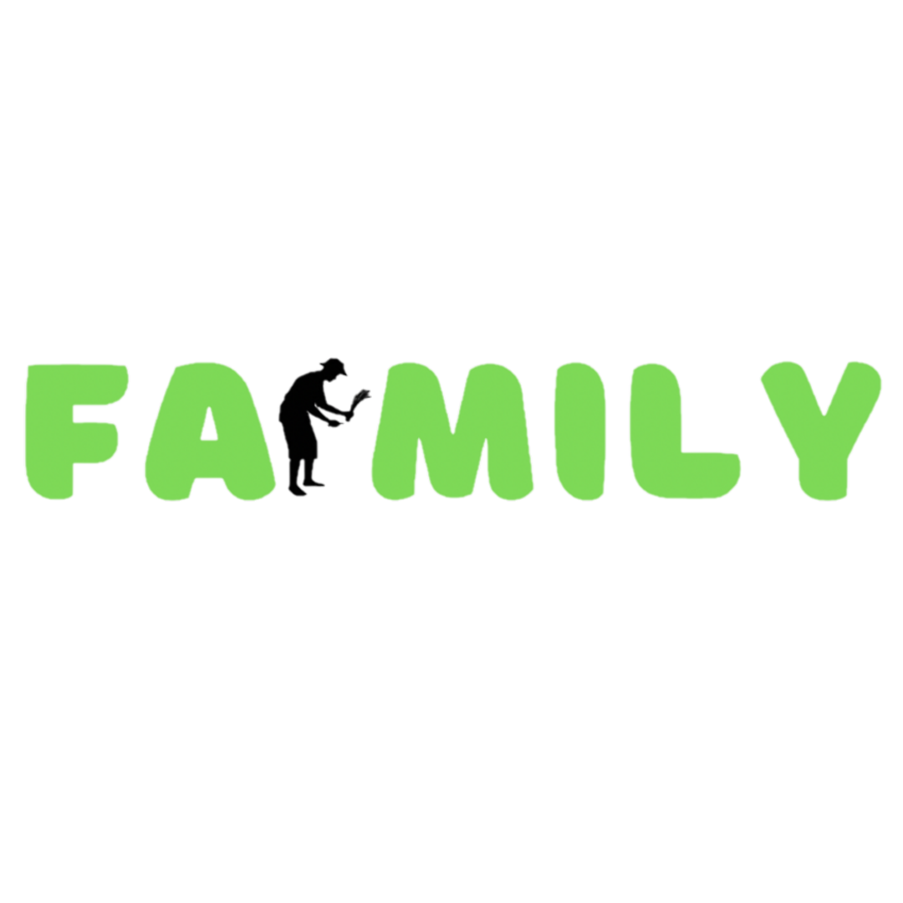

In the present day, sustainability has taken center stage as communities confront the challenges of climate change and environmental degradation. Amidst these pressing issues, Farmily emerges as a guiding light of hope, leading the way toward a more sustainable future through its precision livestock farming practices and unwavering dedication to environmental stewardship.
At the heart of Farmily's success lies its unwavering commitment to sustainability and ethical practices. From the initial stages of seed sowing and livestock breeding to the eventual delivery of the final product into the consumer's hands, every step of the journey is imbued with care and intentionality. This dedication to quality and integrity shines through in Farmily's offerings, creating a powerful connection with consumers who prioritize ethical consumption.
Moreover, Farmily is committed to reducing its carbon footprint through the adoption of renewable energy sources and sustainable farming practices. By harnessing solar power and implementing energy efficient systems, Farmily minimizes its reliance on fossil fuels and mitigates greenhouse gas emissions. Also, Farmily utilizes packaging materials and waste management technologies to promote circularity and minimize environmental footprint throughout its operations.
Beyond technological innovations on the farm, Farmily actively engages with the community to foster sustainability education and awareness. Through interactive workshops, educational programs, and immersive farm experiences, Farmily empowers individuals and communities to make informed decisions about food production and consumption. By sharing knowledge and promoting environmental consciousness, Farmily inspires positive change and cultivates a sense of responsibility toward the environment among its stakeholders.